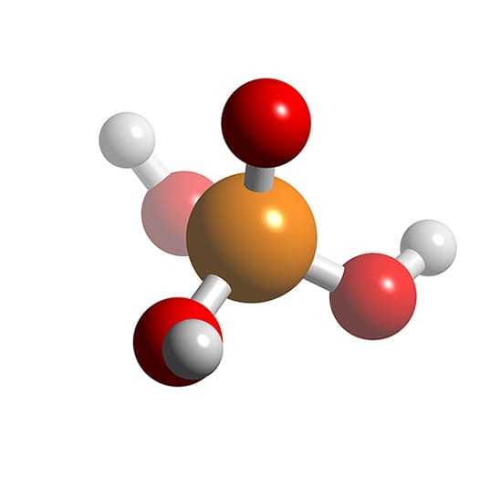

1. Оформлений текст
Хімічна реакція ортофосфорної кислоти:
P2O5 + 3H2O → H3PO4
PO43−.
курсив α, β, γ.
<H3PO4>.

2. Дворівневий список: розподіл груп за спеціальностями
- СП
- СП-24-1
- СП-24-2
- КСМ
- КСМ-24-1
- КСМ-24-2
- КІУКІ
- КІУКІ-24-1
- КІУКІ-24-2
- КІУКІу-25-1
3. таблиця: прогноз погоди
| День | Дата | Вдень, °C | Вночі, °C | Опади |
|---|---|---|---|---|
| Пт | 30.10 | +9 | +3 | Хмарно |
| Сб | 31.10 | +8 | +2 | Невеликий дощ |
| Нд | 01.11 | +7 | +1 | Дощ |
| Пн | 02.11 | +6 | 0 | Без опадів |
| Вт | 03.11 | +8 | +2 | Ясно |
| Ср | 04.11 | +10 | +4 | Хмарно |
| Чт | 05.11 | +11 | +5 | Невеликий дощ |